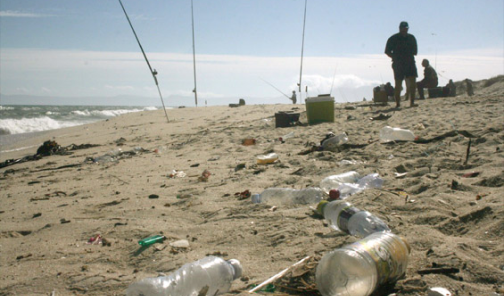

.png)

Na nossa jornada em prol da educação marítima, a colaboração é a bússola que nos guia em direção a águas mais profundas e significativas. Nós acreditamos que o conhecimento do mundo marinho é fundamental para a compreensão e preservação do nosso planeta azul. É por isso que convidamos você a se juntar a nós nessa viagem de descoberta e compromisso.
Por que a Educação Marítima Importa?
Os oceanos são os pulmões da Terra, fornecendo grande parte do oxigênio que respiramos. Além disso, são fundamentais para regular o clima global, fornecer alimentos, recursos e inspirar inovação e descoberta. No entanto, o conhecimento sobre os oceanos e sua importância muitas vezes fica à deriva. A educação marítima não apenas amplia nossa compreensão desses ecossistemas vitais, mas também nos capacita a agir como defensores ativos de sua preservação.
Como você pode colaborar?
-
Voluntarie-se: Se você é apaixonado pelo oceano e deseja fazer a diferença, considere se voluntariar em nossos projetos de conservação marinha. Desde limpezas de praia até monitoramento de recifes de coral, há muitas maneiras de contribuir para a saúde dos nossos mares.
-
Espalhe a Palavra:Compartilhe nosso conteúdo e recursos em suas redes sociais e comunidades. Quanto mais pessoas estiverem conscientes e engajadas na educação marítima, mais impacto positivo podemos ter.
-
Faça uma doação: Se você acredita em nossa missão e deseja apoiar financeiramente nosso trabalho, considere fazer uma doação. Cada contribuição nos ajuda a expandir nossos programas e alcançar mais pessoas ao redor do mundo.